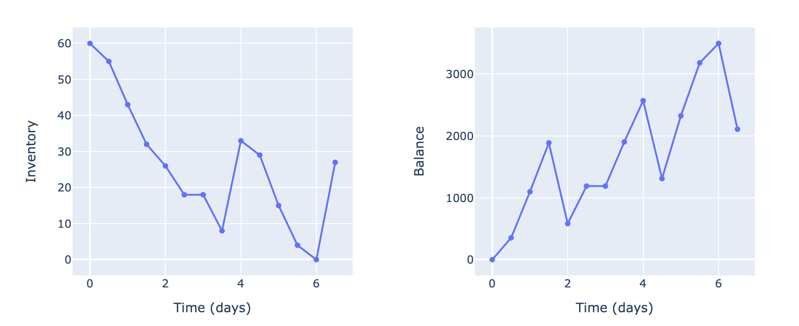
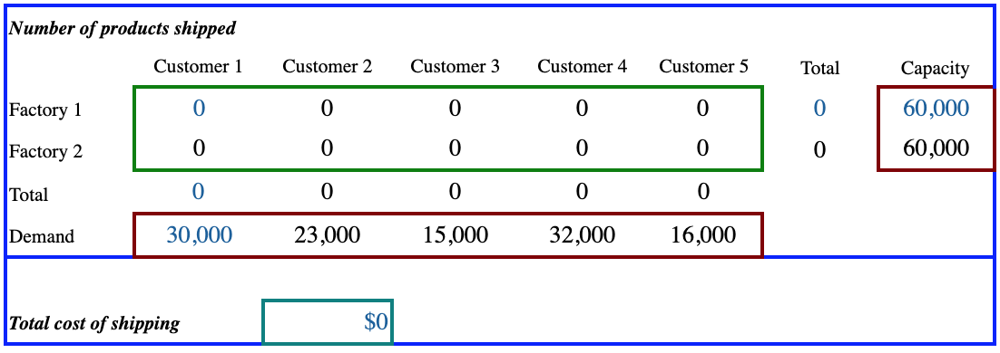

Dashboards below show some example applications optimization tools
applied to supply chain and logistics industry as well as anomaly detection detection in time series data.
Please see mode details in Our Solutions and
Blogs above.
Supply chain simulation and optimization dashboard.
For a given item cost, cost-to-order, holding cost at a warehouse, lead time / delivery days
(simulated using a Poisson distribution with a given mean value), order target
(=desired amount of items to keep in a warehouse), and order cutoff (minimal amount below which we issue a new order),
it shows an expected inventory and budget over next 7 days. Choice of random seed allows simulating multiple times.
Optimizatin procedure (on a separate tab) finds a best policy (Order target, Order cutoff) that maximizes
the budget over 7 days.

Single warehouse supply simulation.
Actual optimization problems can be more complecated, and include a multi-echelon supply chain,
described in "supply_chain". A more sophisitcated optimization methods are required in this case.
Please let us know if it is your case, and we would happy to help!
This dashboard allows to solve a couple of transportation problems. For example, provided a couple of factories
and a set of customers, we may want to minimize the costs of shipping goods from factories to customers,
while not exceeding the supply available from each factory and meeting the demand of each customer.
In the other example, we may choose to store the produced goods in intermediate warehouses. Provided
that we know the warehouse capacities, customer demands, and shipping costs, we can optmize
the overall transportation schedule to minimize costs.

Example of optimization for a transportation problem.
Real life logistics problems can be more complex, and include, for instance,
multiple commodities and limited size vehicles, as described in Section "Logitics".
We would be glad to consider your concrete problem and help you solve it.
Your time series data may contain some patterns which are not always that easy to detect.
An automated procedure that analyzes your streaming data, and reports about such patterns might be
very helpful in this case.